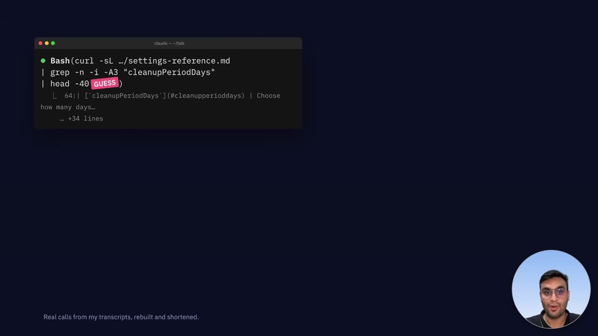
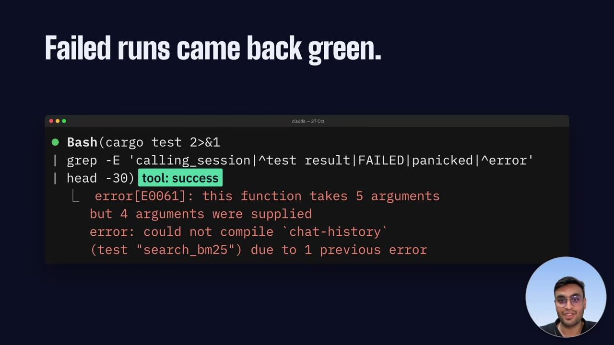
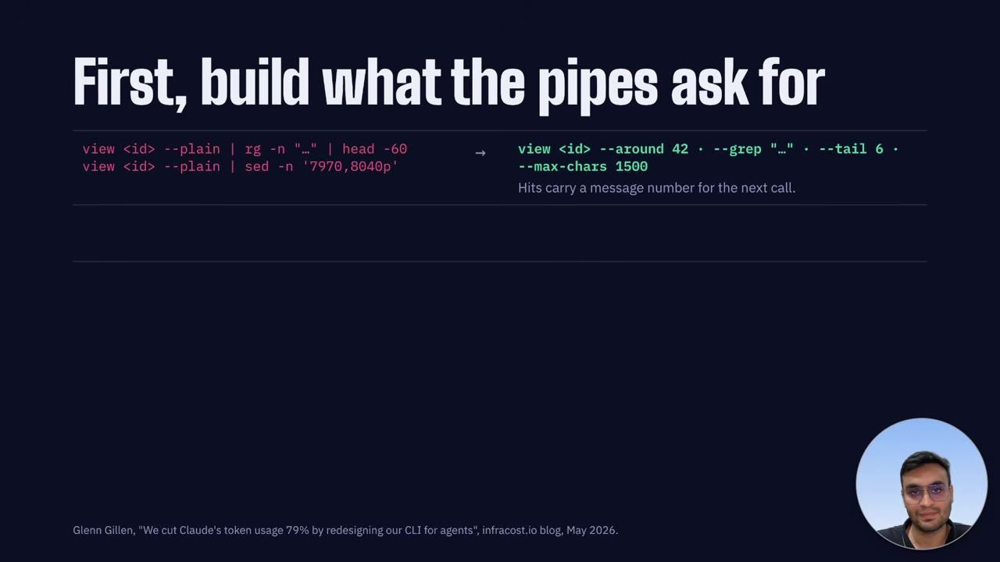
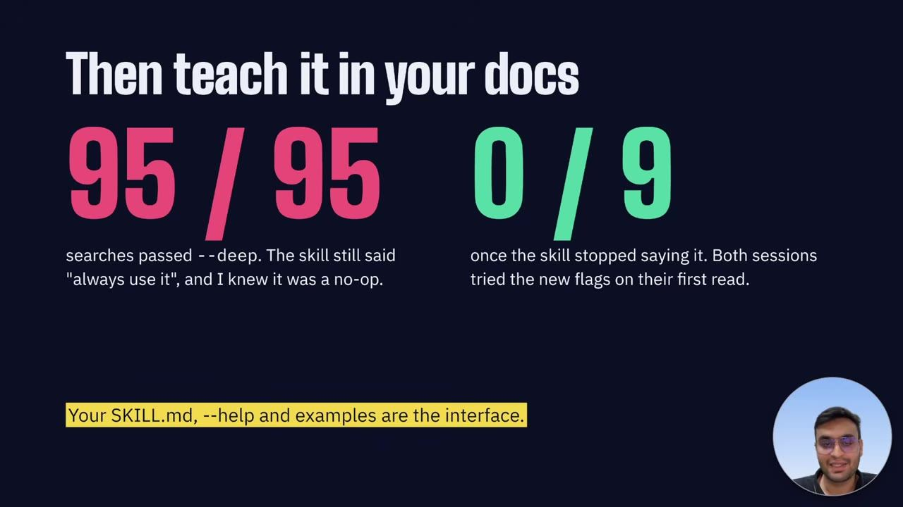
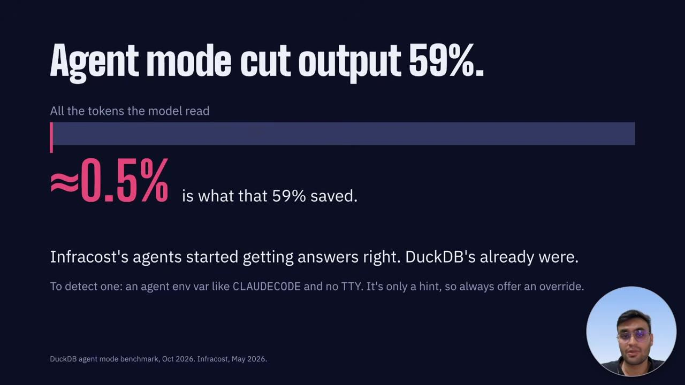

essencial do dia: Mostra, com 20 mil chamadas reais, como ler os workarounds do agente para redesenhar uma CLI que ele consiga usar.
Como ler as transcrições do agente para melhorar seu CLI
Your Agent Hates Your CLI
O que o agente faz logo depois de chamar sua ferramenta mostra o que falta nela. O workaround é o relato de bug.
Depois deste talk você consegue auditar as chamadas de um agente a uma ferramenta de linha de comando e transformar os pipes repetidos em flags, skill e testes de replay
Em 3 frases
Ayush Bhardwaj analisou cerca de 20 mil chamadas de agentes de código e viu que muitas saídas de CLI passam por head, tail, grep ou Python. Cada corte é uma aposta sobre onde está a resposta, e o pipe pode até esconder uma falha de teste.
No CLI de histórico de chat dele, as repetições viraram flags: ler só o trecho ao redor do match, resultado compacto e inspeção de várias sessões numa chamada. O uso de pipe caiu de 82% para cerca de um quarto das leituras.
A flag só funciona se o skill e o help ensinarem o agente a usá-la, e o ganho precisa ser medido em turnos e respostas certas, não só em tokens. Transcrições reais servem de casos de replay e de gabarito aproximado.
Antes de ler
- CLI interface de linha de comando analogia no glossário
- Pipes do Unix e jq encadear comandos e filtrar JSON no terminal
- Skill habilidade, julgamento institucional escrito para o agente executar analogia no glossário
- Harness estrutura que roda o agente analogia no glossário
- Trace registro estruturado da execução analogia no glossário
- Record and replay gravar e repetir fluxos de uso
Cada pipe é uma aposta sobre onde está a resposta
Claude Code, Codex e Cursor cortaram a saída em 40 ou 80 linhas com tail ou head. Cada corte assume que a resposta está no fim, e isso nem sempre vale. Um pipe isolado diz pouco. O mesmo pipe repetido muitas vezes aponta algo que a ferramenta não oferece.


(ampliar imagem)Pipe pode mentir sobre falha
No bash sem pipefail, um pipeline devolve o código de saída do último comando. Cargo test com head pode parecer sucesso mesmo com testes quebrados. O corte também pode remover a mensagem de erro, e o agente relata que deu certo. A regra do palestrante é falhar alto, com um resumo curto e o caminho do log completo nas últimas linhas.


(ampliar imagem)A lista de pipes vira roadmap
Na tabela do talk, a coluna da esquerda é o bug report. Filtrar com rg e sed virou uma flag para ler só o trecho ao redor do match. Python sobre JSON virou um modo compacto, com uma linha por resultado. Um laço manual sobre várias sessões virou uma chamada em lote. Uma sessão inteira tinha 1,2 milhão de caracteres e o trecho útil, cerca de 3 mil.


(ampliar imagem)Mais 2 ideias deste talk
O skill precisa ensinar a flag nova
O autor transformou a flag deep em operação vazia e deixou o skill mandando usá-la. Em 95 buscas, 95 ainda passaram a flag. Com o skill reescrito, nenhuma busca a passou e os agentes testaram as flags novas na primeira leitura. Skill, help e mensagens de erro são a interface, e documentação velha é bug.


(ampliar imagem)Meça turnos e acertos, não só tokens
O modo agente do DuckDB reduziu em 59% o que o modelo leu, mas isso era cerca de 0,5% dos tokens totais. Custo e tempo não mudaram. O palestrante cita o caso da Infracost, em que o acerto foi de zero a seis em seis questões difíceis. Por isso o critério é resposta correta e menos turnos.


(ampliar imagem)A base principal são as transcrições do próprio autor, com cerca de 1.000 chamadas no estudo do CLI e um único usuário. Os testes do skill usaram só duas sessões. O autor promove o chat-history no fim, então há interesse em mostrar que o problema existe. Os casos da Infracost e do DuckDB vêm de terceiros e são citados sem detalhe de método. A afirmação de que agentes projetam mal ferramentas para agentes se apoia em estudos citados de passagem, sem mostrar os números.
Teste você mesmo
Responda de cabeça antes de abrir. Lembrar com esforço é o que fixa.
- lembrar Por que cargo test com head pode parecer bem-sucedido mesmo com testes falhando?
Ver resposta
No bash sem pipefail, um pipeline devolve o código de saída do último comando, no caso o head. O sucesso dele mascara a falha do cargo test.
- aplicar Você mantém uma CLI interna usada por um agente de código. Como descobrir o que melhorar nela?
Ver resposta
Leia as transcrições, procure o nome da ferramenta seguido de pipe e agrupe os padrões repetidos. Cada padrão recorrente indica uma flag ou formato de saída faltando. Se o agente repete a chamada com outros argumentos, há um caso de falha.
- criticar Que limites tem a evidência do experimento do skill com a flag deep?
Ver resposta
A amostra é pequena, com duas sessões de skill reescrito, vem de um único autor e de um único tipo de ferramenta. Mostra que o agente segue instruções velhas, mas não prova que o resultado vale para outras ferramentas ou modelos.
Auditoria de pipes nas suas sessões do Claude Code
Você precisa de: Claude Code com histórico local, terminal e Python 3
- Copie a pasta ~/.claude/projects para outra pasta, para ter um backup das transcrições.
- Escreva um script curto em Python que leia os arquivos .jsonl e extraia os comandos Bash que contêm um pipe para head, tail, grep, sed ou python.
- Agrupe os comandos pelo primeiro programa e pelo programa depois do pipe, e liste os 5 grupos mais frequentes.
- Escolha o grupo mais frequente e escreva em uma frase qual flag ou formato de saída evitaria aquele pipe.
Deu certo se: Você tem uma lista ordenada dos pipes mais repetidos e ao menos uma flag candidata, justificada por quantas vezes o padrão apareceu.
O que fazer com isso
- Exporte as transcrições do seu agente, faça backup e conte quantas chamadas de uma ferramenta seguem para head, tail, grep ou Python.
- Escolha o pipe mais repetido e implemente a flag equivalente, como limite, offset ou saída compacta, com uma linha final dizendo como pedir mais.
- Atualize o skill e o help da ferramenta para citar as flags novas e confira nas próximas sessões se o agente as usa.
- Faça a falha terminar a saída com um resumo curto e o caminho do log completo.
Conversa com outros talks
- MCP ou CLI para expor dados de SaaS a agentes · 9 out · em comum: CLI, MCP, Pipes do Unix e jq
- Agente de código que lê traces e conserta o seu agente · 12 out · em comum: CLI, Skill, Trace
- O que os dados da Stripe mostram sobre empresas de IA · 12 out · em comum: Agent skills, CLI, MCP